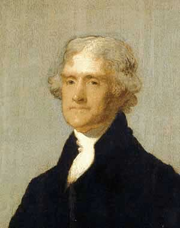

The Jefferson River Coalition


Because he is a river of wisdom and freedom to the American people.
~
Notice: This site is an incomplete outline of an idea some share. We're loading it as quickly as possible. Many links are not yet active. Updating several times a week. Thanks for your patience. Elias Alias & Basil Fishbone
~
****************************************************************************************************
Oath Keepers!
Veterans, active-duty military, law enforcement personnel - You swore an oath to the U.S. Constitution. Now is a good time to review just what that oath meant to you then, and what it means to you now, and what it means to we the people in today's troubled times. Curious? Click this link -
Also, Oath Keepers' original blog-site is here -
http://www.oath-keepers.blogspot.com/
Want to talk about it? Click this link -
http://www.thementalmilitia.com/forums/index.php?board=60.0
****************************************************************************************************
Action Alert March 19, 2009: US Army Field Manual On Unconventional Warfare - Click *here for one article about the document and the link for downloading the document as a pdf file. The name of the document is:
Field Manual (FM) 3-05.130, Army Special Operations Forces Unconventional Warfare
Shortcut to the url for the pdf file containing the Manual itself: http://www.fas.org/irp/doddir/army/fm3-05-130.pdf
That document explains how U.S. forces, including Intelligence agencies such as DIA and CIA as well as special units in the U.S. Army, may use smugglers, narco-traffickers, human traffickers, and terrorists, as surrogates in their day-to-day business of conducting black, covert, and psychological operations which the Army feels will serve "American interests". And the document does not stop with just those unsavory crimes - please read this document by the U.S. Army. And weep. For America.
***************************************************************************************************
~
Notes From The Editors and Staff
Military Industrial Police State
~
Want to talk about it? Visit Our Forum (offsite) - http://www.thementalmilitia.com
~

EA note: Ron Paul has officially withdrawn from the 2008 Presidential Campaign, but never wearies in his fight for freedom. The "Hope for America" is now in your and our individual hands. And now we know that Ron Paul walks among us. Ron Paul now has a new website for organizing the Ron Paul Revolution. You may keep up to date with Ron Paul's campaign for liberty here: http://www.campaignforliberty.com/
~
"If we stuck to the Constitution as written, we would have: no federal meddling in our schools; no Federal Reserve; no U.S. membership in the UN; no gun control; and no foreign aid. We would have no welfare for big corporations, or the "poor"; no American troops in 100 foreign countries; no NAFTA, GATT, or "fast-track"; no arrogant federal judges usurping states rights; no attacks on private property; no income tax . We could get rid of most of the cabinet departments, most of the agencies, and most of the budget. The government would be small, frugal, and limited."
Spoken by the Honorable Congressman Ron Paul (R, TX), in 1998. We think Thomas Jefferson would approve, for Ron Paul is the only Congressman we know who consistently honors the U.S. Constitution as written.
http://www.campaignforliberty.com/
~
~
In 1828 Andrew Jackson was elected to his first of two terms as President. During the last year of his first term the bankers drafted a bill to grant an early re-charter of the bank. Jackson vetoed the bill. Below are extracts from his statement at that time. Speaking about the bill before him, he noted:
"It is not our own citizens only who [in the proposed bill] are to receive the bounty of our government. More than eight millions of the stock of this bank are held by foreigners... Is there no danger to our liberty and independence in a bank that in its nature has so little to bind it to our country?
"...Controlling our currency, receiving our public moneys, and holding thousands of our citizens in dependence .... would be more formidable and dangerous than a military power of the enemy.
"If government were to confine itself to equal protection, and, as Heaven does its rains, shower favor alike on the high and the low, the rich and the poor, it would be an unqualified blessing. In the act before me there seems to be a wide and unnecessary departure from these just principles." (President Andrew Jackson,1831.)
~ ~ ~ ~ ~ ~ ~ ~
Are you a Representative or Senator in Montana? Or perhaps a Governor? You might enjoy reading the comments under this article, now archived at the Missoulian website: "house shoots down federal gun controls". Do read the comments below the article!
by
http://www.missoulian.com/articles/2009/02/14/bnews/br26.txt
~
This site copyright Elias Alias and Don Doig 2005, 2009
Hosted by NearlyFreeSpeech.net